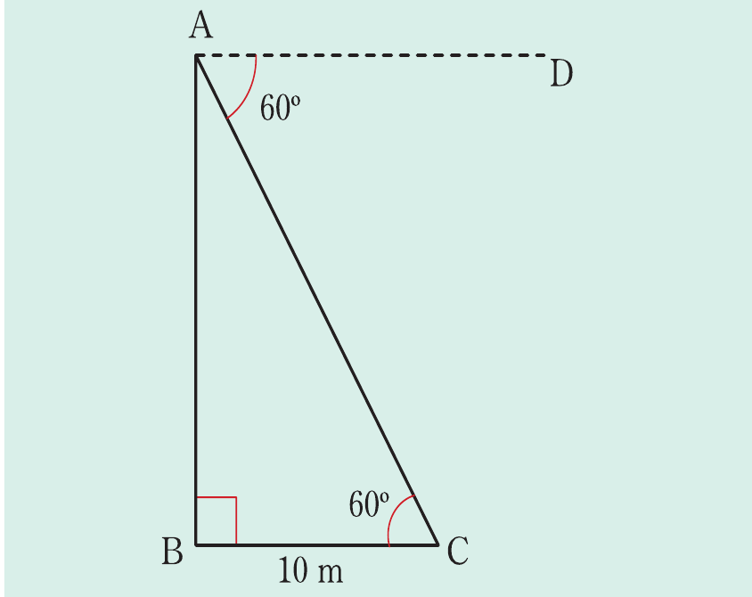

Example 8.21
From the top of a tower, the angle of depression of a point on the ground 10 m away from the base of a tower is 60°. How high is the tower?
Solution
Consider the following figure.

Let A be the top point of the tower, C be the point of observation and B be the base of the tower. Thus, . It follows that,
Therefore, the height of the tower is 17.32 m.
Example 8.22
Two pegs, P and Q are on level ground. Both pegs lie due west of a flag post. The angle of elevation of the top of the flag post from P is 45° and from Q is 60°. If P is 24 m from the foot of the flag post, find PQ.